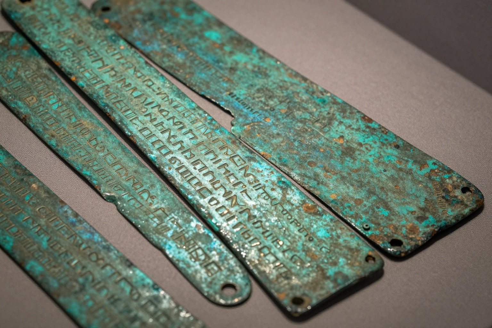
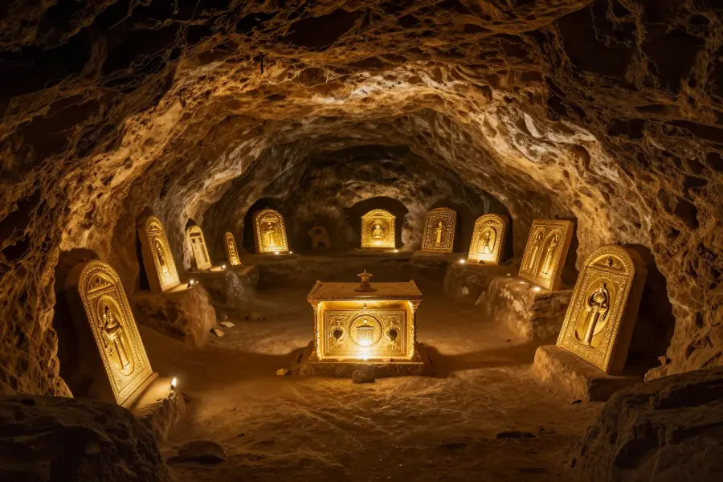

The Copper Scroll Treasure: Ancient Treasure Map or Myth?

The Copper Scroll is unlike any other Dead Sea Scroll — made of metal and listing vast hidden treasures.
Imagine finding a 2,000-year-old treasure map that describes billions of dollars in hidden gold and silver. Now imagine that map is real, sitting in a museum in Amman, Jordan, and nobody has ever found the treasure it describes.
That’s exactly what the Copper Scroll represents. Found among the Dead Sea Scrolls in 1952, this unusual artifact lists 64 locations where enormous quantities of precious metals were buried. But after decades of searching, the treasure remains unfound.
Overview
A Scroll Unlike Any Other
Most Dead Sea Scrolls are written on parchment or papyrus. The Copper Scroll is exactly what it sounds like — a document inscribed on thin sheets of copper. When archaeologists found it in Cave 3 near Qumran in 1952, it was so brittle that it had to be cut into strips to be read.
What they discovered was astonishing. Instead of religious texts like the other scrolls, the Copper Scroll contained a detailed list of 64 hiding places for treasure. The amounts described are staggering:
- 💰 Gold: Tons of gold bars, vessels, and coins
- 🥈 Silver: Thousands of talents of silver (a talent was about 75 pounds)
- 📿 Precious objects: Priestly garments, libation vessels, and scrolls
Estimates of the total value range from $1 billion to $3 billion in today’s money. But the real question isn’t how much — it’s whether it actually exists.

The arid caves of Qumran preserved the Copper Scroll for over 2,000 years in the desert landscape near the Dead Sea.
🔧 How They Opened It
The scroll was so oxidized and fragile that it couldn’t be unrolled by hand. Scientists at the University of Manchester eventually cut it into 23 strips using a specialized saw — the only way to read the text without destroying it completely!
What Does It Say?
The text is written in an unusual form of Hebrew — different from the other Dead Sea Scrolls. It reads like a set of instructions for finding hidden caches of valuables. Each entry describes a location using landmarks, measurements, and sometimes cryptic codes.
For example, one entry reads something like: “In the gutter which is in the bottom of the tank, there are 600 bars of gold.” Another mentions a sealed container buried under a specific landmark with silver and gold vessels inside.
The problem? Many of the landmarks described — specific tombs, cisterns, and structures — have either vanished over the millennia or are difficult to identify with certainty today.
Evidence
Who Hid the Treasure?
The scroll dates to somewhere between 25 CE and 135 CE, placing it during the Roman occupation of Judea. Several theories attempt to explain who hid the treasure and why:
🏛️ The Second Temple Priests: Many scholars believe the treasure belonged to the Jewish Temple in Jerusalem. When the Romans destroyed the Temple in 70 CE, priests may have hidden the sacred objects to prevent them from being looted.
⚔️ The Zealots: Others suggest Jewish rebels fighting against Roman occupation hid their war treasury, planning to recover it after victory.
📜 The Essenes: Some link the treasure to the Essenes, the Jewish sect believed to have produced the Dead Sea Scrolls. However, the Copper Scroll’s unusual language and secular content make this connection uncertain.

If the treasure exists, it would be one of the greatest archaeological discoveries of all time.
Competing Explanations
Real Treasure vs. Ancient Fiction
Not everyone believes the Copper Scroll describes real treasure. Skeptics point out that the amounts seem impossibly large — more gold than existed in all of Judea at the time. Some suggest the scroll is symbolic or represents a wish list rather than an inventory.
Supporters of the treasure theory counter with several points:
- 📍 The locations are very specific with exact measurements, not vague or mythical
- 🏺 The scroll was found alongside genuine historical artifacts
- 🏛️ The Roman-Jewish historian Josephus documented the Temple’s enormous wealth
- 💰 Several smaller hoards from the same period have been found, proving people did hide valuables
🗺️ Treasure Hunters Through the Ages
Numerous expeditions have attempted to find the Copper Scroll treasure. The most famous was led by archaeologist John Allegro in the 1960s. He spent years following the clues and even convinced the King of Jordan to fund excavations — but found nothing.
Open Questions
The Mystery Endures
The Copper Scroll remains one of archaeology’s greatest unsolved mysteries. Has the treasure already been found by looters centuries ago? Is it still buried somewhere in the hills of Judea? Or was it never real to begin with?
With 64 locations to explore and the desert landscape constantly changing, the Copper Scroll continues to inspire treasure hunters and researchers alike. The answer may still be out there, waiting under two millennia of sand and stone.
📖 Recommended Reading
Want to learn more? Check out The Copper Scroll on Amazon for a deeper dive into this fascinating topic. (As an Amazon Associate, we earn from qualifying purchases.)
References & Further Reading
- The Leon Levy Dead Sea Scrolls Digital Library
- British Museum: Dead Sea Scrolls collection
- JSTOR: The Copper Scroll and the Treasures of the Jewish Temple (academic paper)
- Wikipedia: The Copper Scroll overview
Editorial note: interpretations of the Copper Scroll locations remain debated among scholars. See our Editorial Policy.